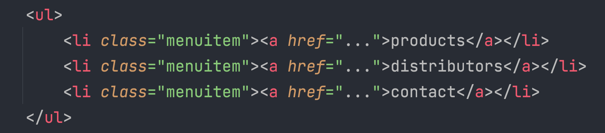

CSS : labo 2
Deze les behandelt verdere mogelijkheden voor CSS-selectoren en style properties, ook komt inheritance (overerving) aan bod.
Onderstaande HTML & CSS fragment maakt deel uit van een menubalk op een bedrijfswebsite:
Herschrijf dit fragment en de CSS-regels zonder classes op elk <li> element te moeten gebruiken.
Open de pagina http://www.CSSzengarden.com/163/ en selecteer in de DOM-tree het element met id=“zen-preamble”.
Download ‘opdracht resume.zip’ en maak de Opdracht.
Klik hier om de opdracht te bekijken.
Maak zelf een HTML-pagina met minstens een h1 hoofding, een ongenummerde lijst een hyperlink en een paar paragrafen.
Klik hier om de opdracht te bekijken.
Zet een tekentje voor een hyperlink.
Klik hier om naar de website te gaan
We zouden graag een checklist in onze pagina’s verwerken. Aangevinkte items in zo’n lijst moeten voorafgegaan worden door een vinkje ☑, andere niet ☐. Merk op dat de gebruiker deze niet zelf kan aanvinken.